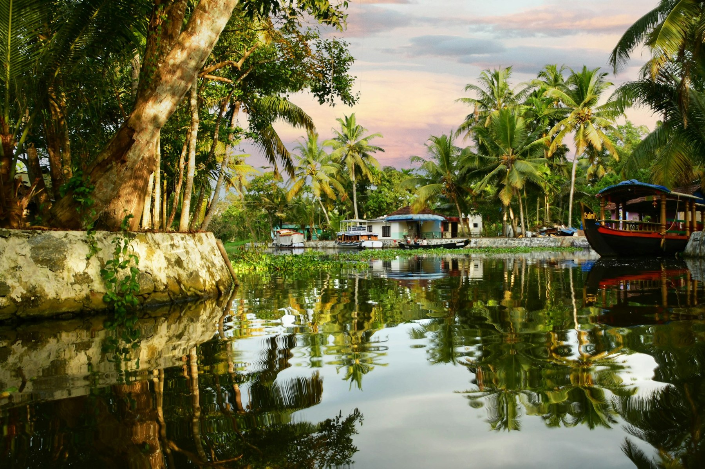

Your kind of journey
Itineraries shaped around
the way you love to travel

Explore God's own country
Backwaters, beaches, hills, culture and cuisine.
Thoughtful journeys. Unforgettable little moments.
Take the scenic route.
We'll help you find your Kerala.
Itineraries shaped around
the way you love to travel
Characterful homestays
and peaceful retreats
Make space for the places
between the landmarks
Less rushing. More moments
that stay with you.
Find your corner of Kerala
From palm-fringed waterways to misty tea hills,
there's a different kind of beautiful around every turn.
Experiences that stay with you
A cup of tea with a view. A meal on a banana leaf.
A quiet afternoon with nowhere else to be.
This is the Kerala we want you to meet.
A little inspiration
A few starting points for your next escape.
Choose a journey and make it your own.
4 days · Coast & calm
Ease into Kochi, drift through Alleppey's waterways, and leave a little time for the beach.
6 days · A taste of everything
Trade city streets for tea-scented hills, then wind down by the water. A little of everything.
5 days · Nature at your pace
Follow forest paths, explore the hills of Wayanad, and finish with a slow coastal afternoon.
Suggested routes, ready to personalise. Stays, activities and availability are confirmed when you arrange your trip.
The Wandering Keralites way
Kerala is more than a list of places. It's a conversation over chai, the rhythm of a boat on the water, and the turn in the road you didn't expect.
We believe the best journeys leave room for all of it. Start with what moves you, and build a trip that feels like yours.
Before you wander
Absolutely. Use the trip planner to choose your preferred destination, dates, pace and group size. You can save your summary and use it as the starting point for arranging your journey.
A short break can focus on one area, while a longer trip leaves room to combine hills, backwaters and coast. Our suggested journeys are starting points; leave enough time for travel between stops.
This website helps you explore destinations and prepare a trip plan. It does not take payments or confirm reservations. Arrange your stays, transport and activities separately before you travel.